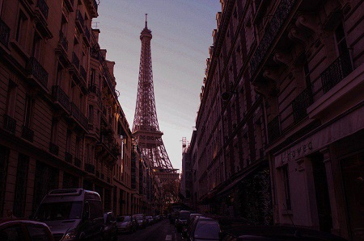

Skills
Sports
Swimming & Karate
Swimming Gold Medal, 2007
I always wanted to know how much I could push my limits; hence, I have been involved in many activities.
Although, it is important not to jump from one skill to another, and make yourself a pro at a specific field, I believe we should give ourself some time and the required resources, so we could find our passions and talents. And this journey is only possible by trying different hobbies.
From a young age, before starting elementary school, I started learning English, taking piano classes, and doing gymnastics.
When I entered pre-school, I entered the swimming team and got a gold medal in it.
Karate Medals (three bronze, and one silver)
As I started getting older, I realized I wanted to be able to protect myself as a young lady who wanted to be independent in the future, so I started taking karate classes in Shitō-ryū style.
That was when I had my first solo trip with my teammates to enter the Iran's provincial competition. Our team entered the competition as the Tehran's representative. It was such an amazing experience, and I was able to get two medals, which was added to my other Karate achievements.
I resumed doing karate till I reached the purple belt, when I had to quit to be more focused on my studies, and get ready to enter secondary school.
Yellow Belt Certificate, 15-08-2010
Orange Belt Certificate, 22-11-2010
Blue Belt Certificate, 26-05-2011
Green Belt Certificate, 11-11-2011
Green Belt Certificate, 11-11-2011
Purple Belt Certificate, 05-03-2012
Purple Belt Certificate, 05-03-2012
Art
Writing, Singing, and Playing Instruments
When I was in sixth grade, me and my classmates participated in a singing contest with other schools in Tehran. This event which was held by Tehran's Amoozesh and Parvaresh ministry, was such a delightful experience for me as I have been interested in singing since I was a little girl. We were able to get first place in this field.
Although I am interested in various topics, one of my biggest passion has always been writing. I first started by writing small poems in first grade, although they were not bad for a 7-year-old, they were definitely not professional. But as I got older, I worked more on my technique, and improved my writing skills. In addition to that, writing always came to me naturally, specially, when the easiest way I was able to experience my feelings was through my stories. In 9th grade I started writing short stories, and was able to get the first place in the “Osve Hasane” competition. This event was between Salam schools in Tehran.
Writing Competition’s tablets, January 2016
Adobe Photoshop & Photography
As I got older, I found out I was very interested in photography as well, that was when my parents bought my first camera. I was very passionate about photographing since I was always fascinated by the idea of saving a moment in a frame. I truly believe it is one of the human being’s best inventions of all time!
Below pictures are all taken by that camera, which was a Canon EOS Rebel T8i/850D.

Streets of Paris, 2018
Eiffel Tower, Paris, 2017
Louvre Museum, Paris, 2017

Streets of Paris, 2018

The lock bridge, Seine River, Paris, 2017
Ponte 25 de Abril, Lisbon, 2017
Programming Languages
Then I entered middle school. Our school held a test for Java field which I was accepted into and guid me into finally finding my favorite passion.
I have always been interested in learning computer programming languages, I first realized that when I was 13 years old and started learning Java. It truly is wonderful how you could write a code of your own and create something new, which will run as exactly as you wish, and will do what you command. Also, it helps you to learn to focus more, since sometimes even a missing comma in a code will mess up the entire program.
Java Certificates, 2013-2014
Java Certificates, 2013-2014
I had to stop due to the Konkoor test in Iran, which is held yearly and determines the university you could enter. But I resume expanding my knowledge afterwards by taking classes at Tehran's Mojtama Fani institute, and later on by taking C, and MATLAB courses at my university.
Now I am taking online Algorithm courses at Harward, and Python courses at Quera.
HTML5-CSS3 certificate, 2022
JavaScript, jQuery and AJAX certificate, 2022